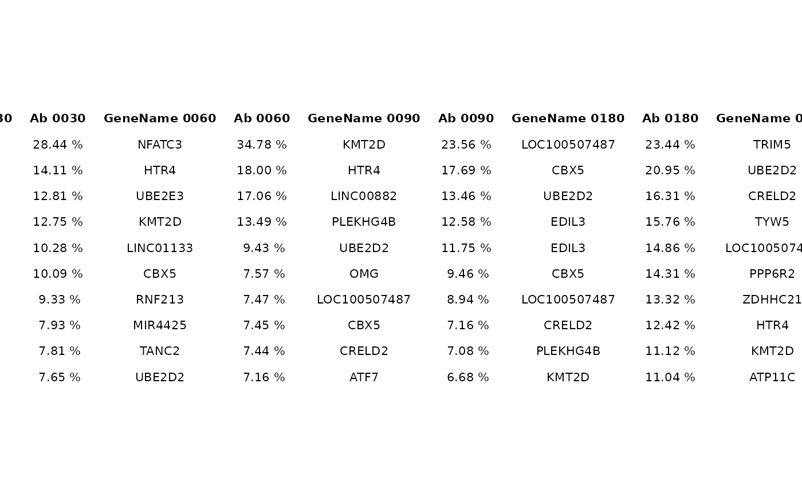

Produce summary tableGrobs as R graphics. For this functionality the suggested package gridExtra is required. To visualize the resulting object:
gridExtra::grid.arrange(tableGrob)
top_abund_tableGrob( df, id_cols = mandatory_IS_vars(), quant_col = "fragmentEstimate_sum_PercAbundance", by = "TimePoint", alluvial_plot = NULL, top_n = 10, tbl_cols = "GeneName", include_id_cols = FALSE, digits = 2, perc_symbol = TRUE )
| df | A data frame |
|---|---|
| id_cols | Character vector of id column names. To plot after alluvial,
these columns must be the same as the |
| quant_col | Column name holding the quantification value.
To plot after alluvial,
these columns must be the same as the |
| by | The column name to subdivide tables for. The function
will produce one table for each distinct value in |
| alluvial_plot | Either NULL or an alluvial plot for color mapping between values of y. |
| top_n | Integer. How many rows should the table contain at most? |
| tbl_cols | Table columns to show in the final output besides
|
| include_id_cols | Logical. Include |
| digits | Integer. Digits to show for the quantification column |
| perc_symbol | Logical. Show percentage symbol in the quantification column? |
A tableGrob object
op <- options("ISAnalytics.widgets" = FALSE, "ISAnalytics.verbose" = FALSE) path_AF <- system.file("extdata", "ex_association_file.tsv", package = "ISAnalytics" ) root_correct <- system.file("extdata", "fs.zip", package = "ISAnalytics") root_correct <- unzip_file_system(root_correct, "fs") association_file <- import_association_file(path_AF, root_correct, dates_format = "dmy" ) matrices <- import_parallel_Vispa2Matrices_auto( association_file = association_file, root = NULL, quantification_type = c("fragmentEstimate", "seqCount"), matrix_type = "annotated", workers = 2, matching_opt = "ANY" ) agg <- aggregate_values_by_key( x = matrices, association_file = association_file, value_cols = c("fragmentEstimate", "seqCount") ) abundance <- compute_abundance(agg, columns = "fragmentEstimate_sum", key = c("SubjectID", "CellMarker", "Tissue", "TimePoint") ) grob <- top_abund_tableGrob(abundance) gridExtra::grid.arrange(grob)